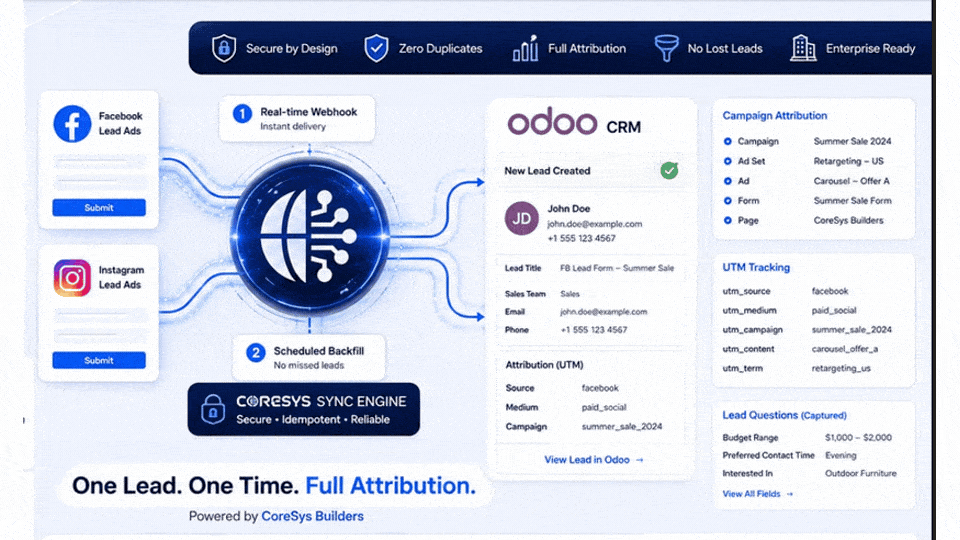
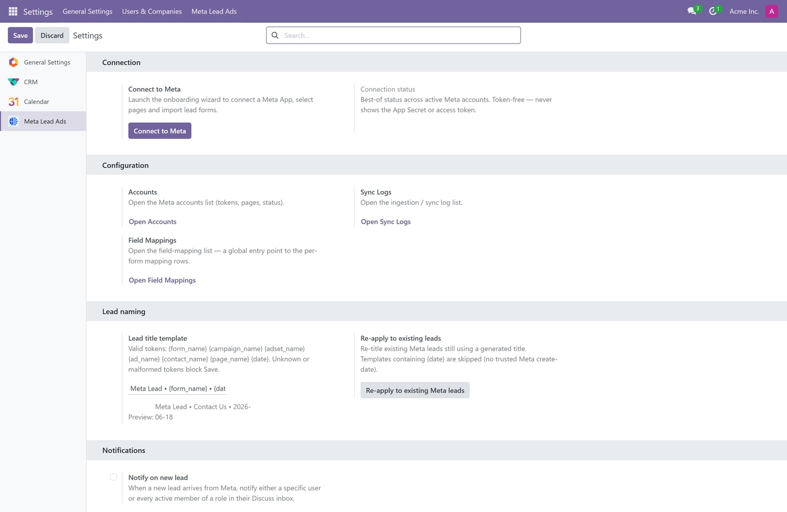
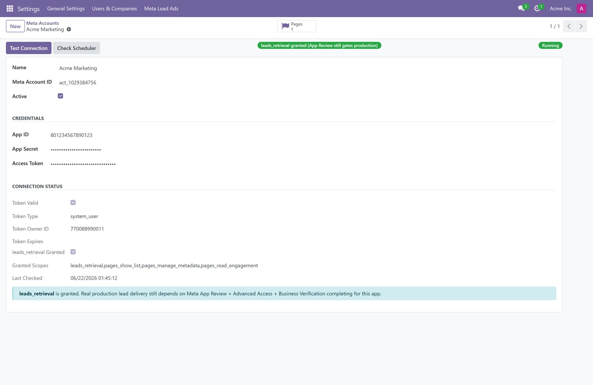
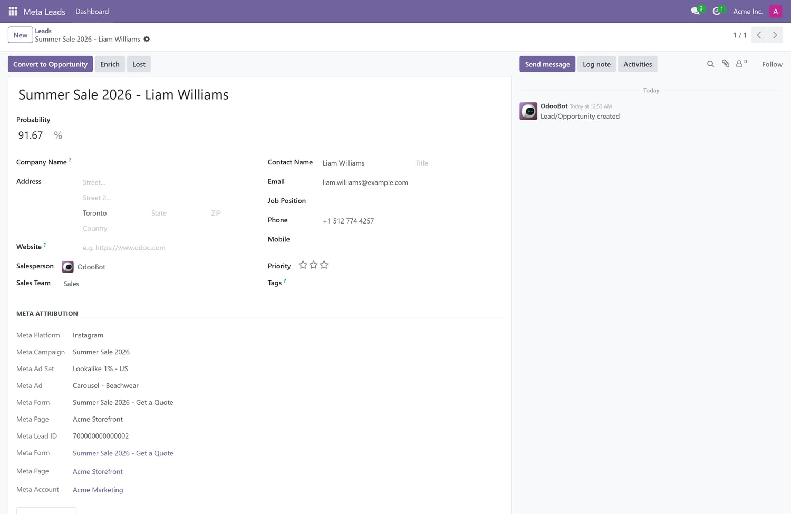
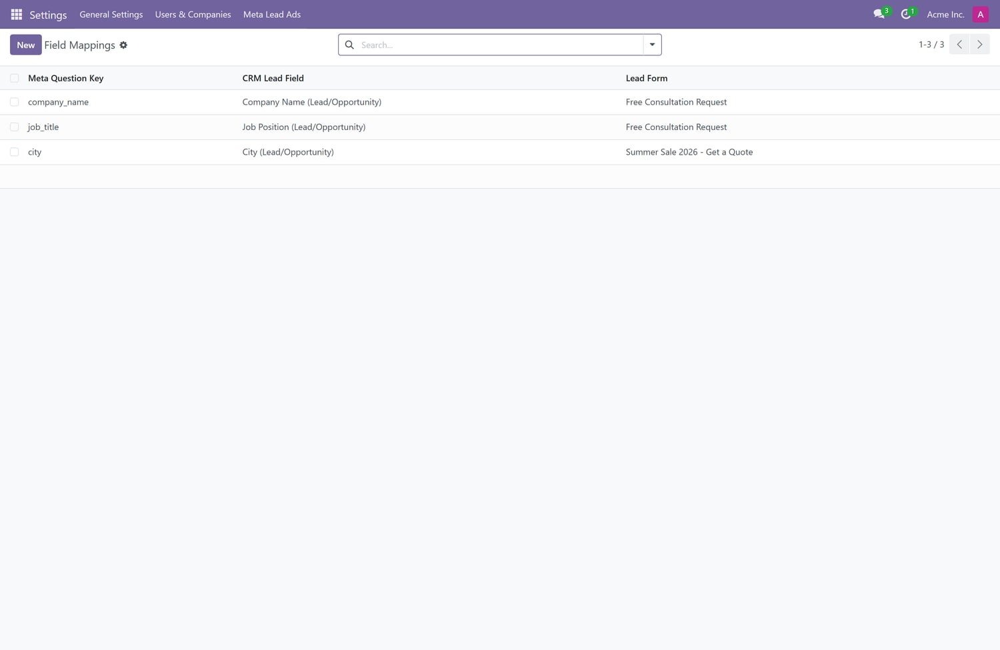
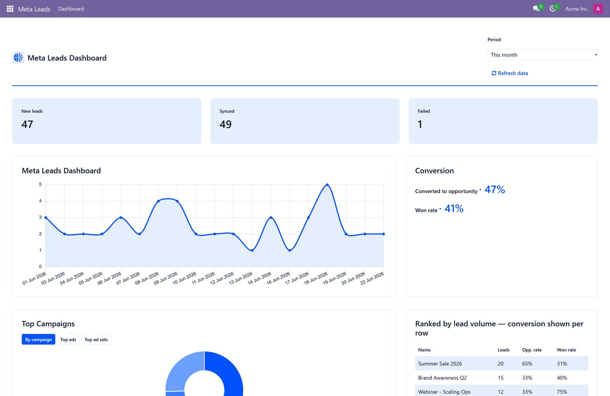
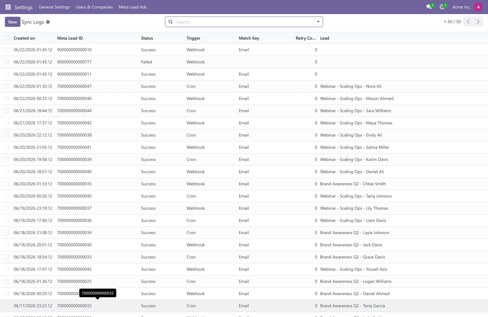

Facebook and Instagram leads arrive in Odoo CRM in real time, with the campaign, ad set, ad and form that produced them. No CSV exports, no middleware.
This module connects Meta Lead Ads to your CRM through a verified webhook for real-time delivery and a scheduled backfill that re-checks every form, so a missed webhook never costs you a lead. Both paths run through a single ingestion service, so each lead is created once — never duplicated, even when Meta re-sends an event.
Real-time, with a safety net. A signature-verified webhook captures leads the moment they're submitted; a backfill cron re-sweeps each form on a schedule. Exactly-once creation is enforced by a database constraint, not a best-effort check.
Attribution you can act on. Campaign, ad set, ad, form and page — names and IDs — are recorded on every lead and mapped to Odoo UTM, so you can see which ad produced which opportunity.
Careful with credentials. The App Secret and access tokens are restricted to administrators. The webhook checks Meta's signature over the raw request body before parsing anything, and nothing secret is ever written to the logs.
Under Settings → Meta Lead Ads, the Connect wizard takes your App ID, App Secret and access token, validates them, and discovers your Pages and lead forms. Accounts, field mappings, sync logs and lead naming all live in one place.

Each account shows its token validity, granted scopes, whether leads_retrieval is in place, and whether Odoo's scheduler is running your jobs — with Test Connection and Check Scheduler buttons so you can confirm it yourself.

Leads come in as ordinary crm.lead records you can qualify and convert. A Meta Attribution section records the platform, campaign, ad set, ad, form and page, plus the originating Meta Lead ID.

Custom form questions are stored on every lead. Map a question to an existing CRM field, or promote an answer into a new field from the lead itself — the answers you collect are never discarded.

A read-only dashboard shows leads over time, lead-to-opportunity and win rates, a breakdown by campaign, and a ranking of your best performers, with health indicators for the webhook, scheduler and token.

Every attempt — webhook, cron or manual — is logged with its status, trigger and the dedup key that matched. If something fails, select the row and retry; the same ingestion service re-fetches it from Meta.

crm, utm and mail modulesrequests libraryBefore going live, Meta requires App Review with Advanced Access for leads_retrieval (plus pages_show_list, pages_manage_metadata and pages_read_engagement) and Business Verification. An app in Development Mode returns test leads only, so it's worth starting the review early.
CoreSys Builders. © 2026, all rights reserved. Licensed under the Odoo Proprietary License v1.0 (OPL-1); redistribution and resale are not permitted. Questions and feature requests are welcome.